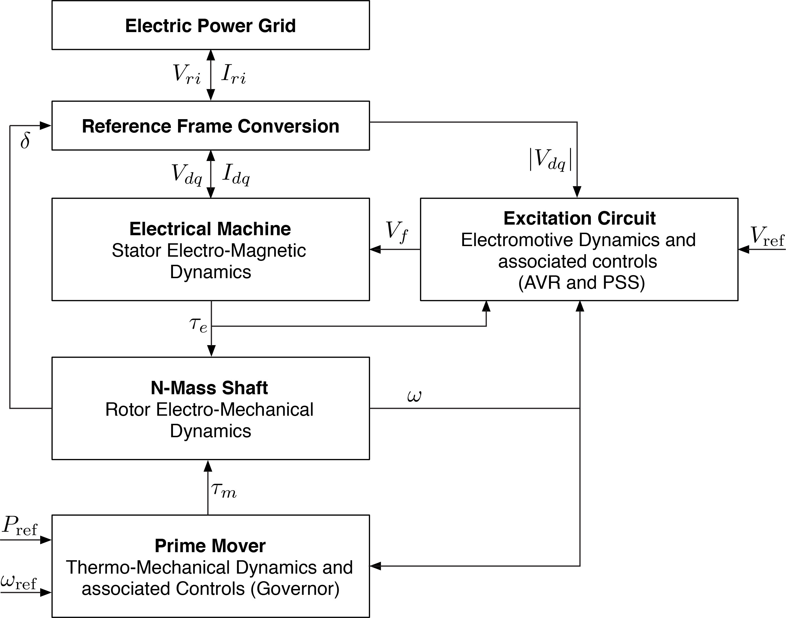

Here we discuss the structure and models used to model generators in LITS.jl. Each generator is a data structure that is defined by the following components:
- Machine: That defines the stator electro-magnetic dynamics.
- Shaft: That describes the rotor electro-mechanical dynamics.
- Automatic Voltage Regulator: Electromotive dynamics to model an AVR controller.
- Power System Stabilizer: Control dynamics to define an stabilization signal for the AVR.
- Prime Mover and Turbine Governor: Thermo-mechanical dynamics and associated controllers.
The following figure summarizes the components of a generator and which variables they share:
⠀
Each generator is defined in its own $dq$ reference frame. Let $\delta$ be the rotor angle of the generator. If $v_r + jv_i = v_h\angle \theta$ defines the voltage in the bus in the network reference frame $RI$ rotating at nominal frequency $\Omega_b$, then the following equations (both are equivalent) can be used to convert between reference frames:
\[\begin{align}
\left[ \begin{array}{c} v_d \\ v_q \end{array} \right] &= \left[ \begin{array}{c} v_h \sin(\delta - \theta) \\ v_h \cos(\delta - \theta) \end{array} \right] \tag{0a} \\
\left[ \begin{array}{c} v_d \\ v_q \end{array} \right] &= \left[ \begin{array}{cc} \sin(\delta) & -\cos(\delta) \\ \cos(\delta) & \sin(\delta) \end{array} \right] \left[ \begin{array}{c} v_r \\ v_i \end{array} \right] \tag{0b}
\end{align}\]
Models are based from Federico Milano's book: "Power System Modelling and Scripting" and Prabha Kundur's book: "Power System's Stability and Control" and structures are defined in PowerSystems.jl abbreviated as PSY.
The machine component describes the stator-rotor electromagnetic dynamics.
This is the classical order model that does not have differential equations in its machine model ($\delta$ and $\omega$ are defined in the shaft):
\[\begin{align}
\left[ \begin{array}{c} i_d \\ i_q \end{array} \right] &= \left[ \begin{array}{cc} r_a & -x_d' \\ x_d' & r_a \end{array} \right]^{-1} \left[ \begin{array}{c} -v_d \\ e_q' - v_q \end{array} \right] \tag{1a}\\
p_e \approx \tau_e &= (v_q + r_a i_q)i_q + (v_d + r_ai_d)i_d \tag{1b}
\end{align}\]
This model includes two transient emf with their respective differential equations:
\[\begin{align}
\dot{e}_q' &= \frac{1}{T_{d0}'} \left[-e_q' + (x_d-x_d')i_d + v_f\right] \tag{2a}\\
\dot{e}_d' &= \frac{1}{T_{q0}'} \left[-e_d' + (x_q-x_q')i_q \right] \tag{2b}\\
\left[ \begin{array}{c} i_d \\ i_q \end{array} \right] &= \left[ \begin{array}{cc} r_a & -x_q' \\ x_d' & r_a \end{array} \right]^{-1} \left[ \begin{array}{c} e_d'-v_d \\ e_q' - v_q \end{array} \right] \tag{2c}\\
p_e \approx \tau_e &= (v_q + r_a i_q)i_q + (v_d + r_ai_d)i_d \tag{2d}
\end{align}\]
The Marconato model defines 6 differential equations, two for stator fluxes and 4 for transient and subtransient emfs:
\[\begin{align}
\dot{\psi}_d &= \Omega_b(r_ai_d + \omega \psi_q + v_d) \tag{3a} \\
\dot{\psi}_q &= \Omega_b(r_ai_q - \omega \psi_d + v_q) \tag{3b} \\
\dot{e}_q' &= \frac{1}{T_{d0}'} \left[-e_q' - (x_d-x_d'-\gamma_d)i_d + \left(1- \frac{T_{AA}}{T_{d0}'} \right) v_f\right] \tag{3c}\\
\dot{e}_d' &= \frac{1}{T_{q0}'} \left[-e_d' + (x_q-x_q'-\gamma_q)i_q \right] \tag{3d}\\
\dot{e}_q'' &= \frac{1}{T_{d0}''} \left[-e_q'' + e_q' - (x_d'-x_d''+\gamma_d)i_d + \frac{T_{AA}}{T_{d0}'}v_f \right] \tag{3e} \\
\dot{e}_d'' &= \frac{1}{T_{q0}''} \left[-e_d'' + e_d' + (x_q'-x_q''+\gamma_q)i_q \right] \tag{3f} \\
i_d &= \frac{1}{x_d''} (e_q'' - \psi_d) \tag{3g} \\
i_q &= \frac{1}{x_q''} (-e_d'' - \psi_q) \tag{3h} \\
\tau_e &= \psi_d i_q - \psi_q i_d \tag{3i}
\end{align}\]
with
\[\begin{align*}
\gamma_d &= \frac{T_{d0}'' x_d''}{T_{d0}' x_d'} (x_d - x_d') \\
\gamma_q &= \frac{T_{q0}'' x_q''}{T_{q0}' x_q'} (x_q - x_q')
\end{align*}\]
This model neglects the derivative of stator fluxes ($\dot{\psi}_d$ and $\dot{\psi}_q$) and assume that the rotor speed stays close to 1 pu ($\omega\psi_{d}=\psi_{d}$ and $\omega\psi_{q}=\psi_{q}$) that allows to remove the stator fluxes variables from the Marconato model.
\[\begin{align}
\dot{e}_q' &= \frac{1}{T_{d0}'} \left[-e_q' - (x_d-x_d'-\gamma_d)i_d + \left(1- \frac{T_{AA}}{T_{d0}'} \right) v_f\right] \tag{4a}\\
\dot{e}_d' &= \frac{1}{T_{q0}'} \left[-e_d' + (x_q-x_q'-\gamma_q)i_q \right] \tag{4b}\\
\dot{e}_q'' &= \frac{1}{T_{d0}''} \left[-e_q'' + e_q' - (x_d'-x_d''+\gamma_d)i_d + \frac{T_{AA}}{T_{d0}'}v_f \right] \tag{4c} \\
\dot{e}_d'' &= \frac{1}{T_{q0}''} \left[-e_d'' + e_d' + (x_q'-x_q''+\gamma_q)i_q \right] \tag{4d} \\
\left[ \begin{array}{c} i_d \\ i_q \end{array} \right] &= \left[ \begin{array}{cc} r_a & -x_q'' \\ x_d'' & r_a \end{array} \right]^{-1} \left[ \begin{array}{c} e_d''-v_d \\ e_q'' - v_q \end{array} \right] \tag{4e}\\
p_e \approx \tau_e &= (v_q + r_a i_q)i_q + (v_d + r_ai_d)i_d \tag{4f}
\end{align}\]
with
\[\begin{align*}
\gamma_d &= \frac{T_{d0}'' x_d''}{T_{d0}' x_d'} (x_d - x_d') \\
\gamma_q &= \frac{T_{q0}'' x_q''}{T_{q0}' x_q'} (x_q - x_q')
\end{align*}\]
The Anderson-Fouad model also defines 6 differential equations, two for stator fluxes and 4 for transient and subtransient emfs and is derived from the Marconato model by defining $\gamma_d \approx \gamma_q \approx T_{AA} \approx 0$:
\[\begin{align}
\dot{\psi}_d &= \Omega_b(r_ai_d + \omega \psi_q + v_d) \tag{5a} \\
\dot{\psi}_q &= \Omega_b(r_ai_q - \omega \psi_d + v_q) \tag{5b} \\
\dot{e}_q' &= \frac{1}{T_{d0}'} \left[-e_q' - (x_d-x_d')i_d + v_f\right] \tag{5c}\\
\dot{e}_d' &= \frac{1}{T_{q0}'} \left[-e_d' + (x_q-x_q')i_q \right] \tag{5d}\\
\dot{e}_q'' &= \frac{1}{T_{d0}''} \left[-e_q'' + e_q' - (x_d'-x_d'')i_d \right] \tag{5e} \\
\dot{e}_d'' &= \frac{1}{T_{q0}''} \left[-e_d'' + e_d' + (x_q'-x_q'')i_q \right] \tag{5f} \\
i_d &= \frac{1}{x_d''} (e_q'' - \psi_d) \tag{5g} \\
i_q &= \frac{1}{x_q''} (-e_d'' - \psi_q) \tag{5h} \\
\tau_e &= \psi_d i_q - \psi_q i_d \tag{5i}
\end{align}\]
Similar to the Simplified Marconato Model, this model neglects the derivative of stator fluxes ($\dot{\psi}_d$ and $\dot{\psi}_q$) and assume that the rotor speed stays close to 1 pu ($\omega \psi_d = \psi_d$ and $\omega \psi_q = \psi_q$) that allows to remove the stator fluxes variables from the model:
\[\begin{align}
\dot{e}_q' &= \frac{1}{T_{d0}'} \left[-e_q' - (x_d-x_d')i_d + v_f\right] \tag{6a}\\
\dot{e}_d' &= \frac{1}{T_{q0}'} \left[-e_d' + (x_q-x_q')i_q \right] \tag{6b}\\
\dot{e}_q'' &= \frac{1}{T_{d0}''} \left[-e_q'' + e_q' - (x_d'-x_d'')i_d \right] \tag{6c} \\
\dot{e}_d'' &= \frac{1}{T_{q0}''} \left[-e_d'' + e_d' + (x_q'-x_q'')i_q \right] \tag{6d} \\
\left[ \begin{array}{c} i_d \\ i_q \end{array} \right] &= \left[ \begin{array}{cc} r_a & -x_q'' \\ x_d'' & r_a \end{array} \right]^{-1} \left[ \begin{array}{c} e_d''-v_d \\ e_q'' - v_q \end{array} \right] \tag{6e}\\
p_e \approx \tau_e &= (v_q + r_a i_q)i_q + (v_d + r_ai_d)i_d \tag{6f}
\end{align}\]
This models describes a machine model using 2 stator fluxes $\psi_d$ and $\psi_q$, the rotor field flux $\psi_f$, the d-axis damping $\psi_{1d}$ and only one q-axis damping circuit $\psi_{1q}$:
\[\begin{align}
\dot{\psi}_d &= \Omega_b(r_a i_d + \omega \psi_q + v_d) \tag{7a} \\
\dot{\psi}_q &= \Omega_b(r_ai_q - \omega \psi_d + v_q) \tag{7b} \\
\dot{\psi}_f &= -r_f i_f + v_f \tag{7c}\\
\dot{\psi}_{1d} &= -r_{1d}i_{1d} \tag{7d}\\
\dot{\psi}_{1q} &= -r_{1q}i_{1q} \tag{7e} \\
\left[ \begin{array}{c} i_d \\ i_f \\ i_{1d} \end{array} \right] &= \left[ \begin{array}{ccc} -L_d & -L_{ad} & L_{ad} \\ -L_{ad} & L_{ff} & L_{f1d} \\ -L_{ad} & L_{f1d} & L_{1d} \end{array} \right]^{-1} \left[ \begin{array}{c} \psi_d \\ \psi_f \\ \psi_{1d} \end{array} \right] \tag{7f}\\
\left[ \begin{array}{c} i_q \\ i_{1q} \end{array} \right] &= \left[ \begin{array}{ccc} -L_q & L_{aq} \\ -L_{aq} & L_{1q} \end{array} \right]^{-1} \left[ \begin{array}{c} \psi_q \\ \psi_{1q} \end{array} \right] \tag{7g}\\
\tau_e &= \psi_d i_q - \psi_q i_d \tag{7h}
\end{align}\]
The shaft component defines the rotating mass of the synchronous generator.
This is the standard model, on which one single mass (typically the rotor) is used to model the entire inertia of the synchronous generator. Each generator's rotating frame use a reference frequency $\omega_s$, that typically is the synchronous one (i.e. $\omega_s = 1.0$). The model defines two differential equations for the rotor angle $\delta$ and the rotor speed $\omega$:
\[\begin{align}
\dot{\delta} &= \Omega_b(\omega - \omega_s) \tag{8a} \\
\dot{\omega} &= \frac{1}{2H}(\tau_m - \tau_e - D(\omega-\omega_s)) \tag{8b}
\end{align}\]
This model describes model connecting a high-pressure (hp) steam turbine, intermediate-pressure (ip) steam turbine, low-pressure (lp) steam pressure, rotor and exciter (ex) connected in series (in that order) in the same shaft using a spring-mass model:
\[\begin{align}
\dot{\delta} &= \Omega_b(\omega - \omega_s) \tag{9a} \\
\dot{\omega} &= \frac{1}{2H} \left[- \tau_e - D(\omega-\omega_s)) - D_{34} (\omega-\omega_{lp}) - D_{45}(\omega-\omega_{ex}) + K_{lp}(\delta_{lp-\delta}) +K_{ex}(\delta_{ex}-\delta) \right] \tag{9b} \\
\dot{\delta}_{hp} &= \Omega_b(\omega_{hp} - \omega_s) \tag{9c} \\
\dot{\omega}_{hp} &= \frac{1}{2H_{hp}} \left[ \tau_m - D_{hp}(\omega_{hp}-\omega_s) - D_{12}(\omega_{hp} - \omega_{ip}) + K_{hp}(\delta_{ip} - \delta_{hp}) \right] \tag{9d} \\
\dot{\delta}_{ip} &= \Omega_b(\omega_{ip} - \omega_s) \tag{9e} \\
\dot{\omega}_{ip} &= \frac{1}{2H_{ip}} \left[- D_{ip}(\omega_{ip}-\omega_s) - D_{12}(\omega_{ip} - \omega_{hp}) -D_{23}(\omega_{ip} - \omega_{lp} ) + K_{hp}(\delta_{hp} - \delta_{ip}) + K_{ip}(\delta_{lp}-\delta_{ip}) \right] \tag{9f} \\
\dot{\delta}_{lp} &= \Omega_b(\omega_{lp}-\omega_s) \tag{9g} \\
\dot{\omega}_{lp} &= \frac{1}{2H_{lp}} \left[ - D_{lp}(\omega_{lp}-\omega_s) - D_{23}(\omega_{lp} - \omega_{ip}) -D_{34}(\omega_{lp} - \omega ) + K_{ip}(\delta_{ip} - \delta_{lp}) + K_{lp}(\delta-\delta_{lp}) \right] \tag{9h} \\
\dot{\delta}_{ex} &= \Omega_b(\omega_{ex}-\omega_s) \tag{9i} \\
\dot{\omega}_{ex} &= \frac{1}{2H_{ex}} \left[ - D_{ex}(\omega_{ex}-\omega_s) - D_{45}(\omega_{ex} - \omega) + K_{ex}(\delta - \delta_{ex}) \right] \tag{9j}
\end{align}\]
AVR are used to determine the voltage in the field winding $v_f$ in the model.
This is a simple model that set the field voltage to be equal to a desired constant value $v_f = v_{\text{fix}}$.
This depicts the most basic AVR, on which the field voltage is an integrator over the difference of the measured voltage and a reference:
\[\begin{align}
\dot{v}_f = K_v(v_{\text{ref}} - v_h) \tag{10a}
\end{align}\]
This AVR is a simplified version of the IEEE DC1 AVR model:
\[\begin{align}
\dot{v}_f &= -\frac{1}{T_e} \left[ V_f(K_e + S_e(v_f))-v_{r1} \right] \tag{11a} \\
\dot{v}_{r1} &= \frac{1}{T_a} \left[ K_a\left(v_{\text{ref}} - v_m - v_{r2} - \frac{K_f}{T_f}v_f\right) - v_{r1} \right] \tag{11b} \\
\dot{v}_{r2} &= -\frac{1}{T_f} \left[ \frac{K_f}{T_f}v_f + v_{r2} \right] \tag{11c} \\
\dot{v}_m &= \frac{1}{T_r} (v_h - v_m) \tag{11d}
\end{align}\]
with the ceiling function:
\[\begin{align*}
S_e(v_f) = A_e \exp(B_e|v_f|)
\end{align*}\]
This model represents a static exciter with higher gains and faster response than the Type I:
\[\begin{align}
\dot{v}_f &= -\frac{1}{T_e} \left[ V_f(1 + S_e(v_f))-v_{r} \right] \tag{12a} \\
\dot{v}_{r1} &= \frac{1}{T_1} \left[ K_0\left(1 - \frac{T_2}{T_1} \right)(v_{\text{ref}} - v_m) - v_{r1} \right] \tag{12b} \\
\dot{v}_{r2} &= \frac{1}{K_0 T_3} \left[ \left( 1 - \frac{T_4}{T_3} \right) \left( v_{r1} + K_0\frac{T_2}{T_1}(v_{\text{ref}} - v_m)\right) - K_0 v_{r2} \right] \tag{12c} \\
\dot{v}_m &= \frac{1}{T_r} (v_h - v_m) \tag{12d}
\end{align}\]
with
\[\begin{align*}
v_r &= K_0v_{r2} + \frac{T_4}{T_3} \left( v_{r1} + K_0\frac{T_2}{T_1}(v_{\text{ref}} - v_m)\right) \\
S_e(v_f) &= A_e \exp(B_e|v_f|)
\end{align*}\]
PSS are used to add an additional signal $v_s$ to the field voltage: $v_f = v_f^{\text{avr}} + v_s$.
This is a simple model that set the stabilization signal to be equal to a desired constant value $v_s = v_{s}^{\text{fix}}$. The absence of PSS can be modelled using this component with $v_s^{\text{fix}} = 0$.
This is the most basic PSS that can be implemented, on which the stabilization signal is simply a proportional controller over the frequency and electrical power:
\[\begin{align}
v_s = K_{\omega}(\omega - \omega_s) + K_p(\omega \tau_e - P_{\text{ref}}) \tag{12a}
\end{align}\]
This section describes how mechanical power is modified to provide primary frequency control with synchronous generators. It is assumed that $\tau_{\text{ref}} = P_{\text{ref}}$ since they are decided at nominal frequency $\omega = 1$.
This a simple model that set the mechanical torque to be equal to a proportion of the desired reference $\tau_m = \eta P_{\text{ref}}$. To set the mechanical torque to be equal to the desired power, the value of $\eta$ is set to 1.
This turbine governor is described by a droop controller and a low-pass filter to model the governor and two lead-lag blocks to model the servo and reheat of the turbine governor.
\[\begin{align}
\dot{x}_{g1} &= \frac{1}{T_s}(p_{\text{in}} - x_{g1}) \tag{13a} \\
\dot{x}_{g2} &= \frac{1}{T_c} \left[ \left(1- \frac{t_3}{T_c}\right)x_{g1} - x_{g2} \right] \tag{13b} \\
\dot{x}_{g3} &= \frac{1}{T_5} \left[\left(1 - \frac{T_4}{T_5}\right)\left(x_{g2} + \frac{T_3}{T_c}x_{g1}\right) - x_{g3} \right] \tag{13c} \\
\tau_m &= x_{g3} + \frac{T_4}{T_5}\left(x_{g2} + \frac{T_3}{T_c}x_{g1}\right) \tag{13d}
\end{align}\]
with
\[\begin{align*}
p_{\text{in}} = P_{\text{ref}} + \frac{1}{R}(\omega_s - 1)
\end{align*}\]
This turbine governor is a simplified model of the Type I.
\[\begin{align}
\dot{x}_g &= \frac{1}{T_2}\left[\frac{1}{R}\left(1 - \frac{T_1}{T_2}\right) (\omega_s - \omega) - x_g\right] \tag{14a} \\
\tau_m &= P_{\text{ref}} + \frac{1}{R}\frac{T_1}{T_2}(\omega_s - \omega) \tag{14b}
\end{align}\]
For constructors check the API on PowerSystems.jl documentation